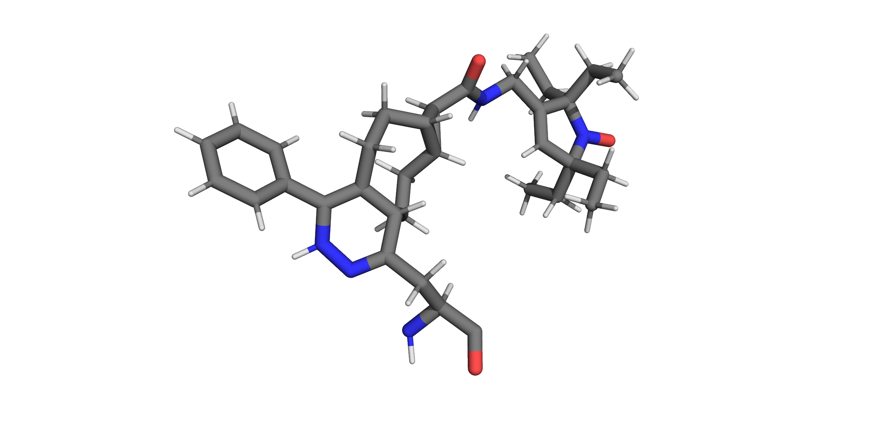
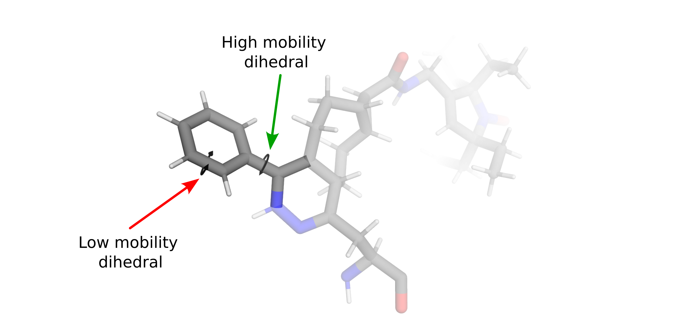
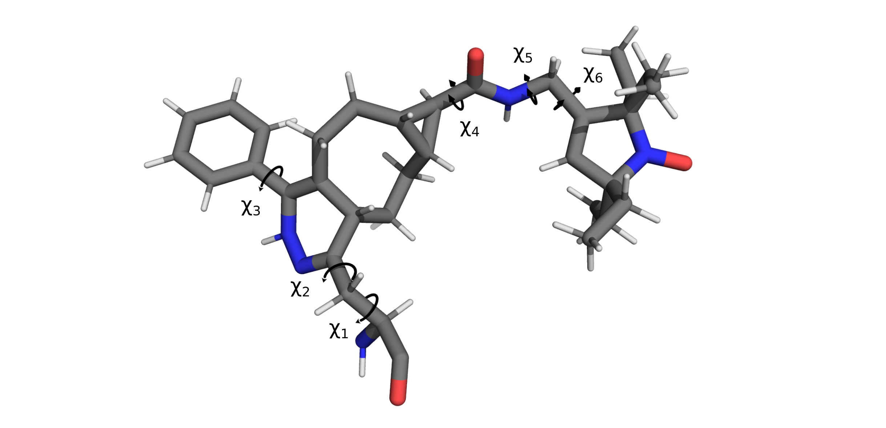

Rotamer Libraries
Note
As of version 0.4.0 chiLife supports custom rotamer libraries with arbitrary backbones. This allows for the creation of rotamer libraries for nucleic acids, as well as libraries that can be used to modify ligands or glycans.
We have added an example of how to create a nucleic acid label and a ligand label in the Examples section.
Creating Custom Rotamer Libraries
A major component of chilife is the creation and sharing of custom rotamer libraries. This is to facilitate rapid
distribution of libraries for novel spin labels and encourage rapid rotamer library testing and development. Rotamer
libraries are added through the create_library() and create_dlibrary()
functions:
xl.create_library('XYZ', 'XYZ.pdb', ...)
or by saving an existing RotamerEnsemble or SpinLabel object as a rotamer library:
mySL = xl.SpinLabel('R1M')
# Some wizardry to optimize structures, weights, etc.
...
mySL.to_rotlib('myR1')
Note
chiLife dRotamerEnsembles and dSpinLabels do not yet have a to_rotlib
method.
chiLife rotamer library creation is very flexible and offers users many ways to modify their rotamer libraries. Below we discuss several intricacies of making rotamer libraries with chiLife and general considerations that should be taken into account when making custom rotamer libraries.
All rotamer libraries in chiLife must start with some sort of structural ensemble that approximates the side chain’s conformational landscape. This can be a very crude approximation, contain only a single or a very detailed approximation containing several rotamers with different weights and statistical parameters describing dihedral motion near every rotamer. As a result, there are many different ways in which a rotamer library can be developed.
The fastest and simplest way to develop a rotamer “library” is to create a PDB file of a single conformation of your rotamer attached to a protein backbone. This can be done with several molecular modeling applications like PyMol, Avogadro, OpenBabel, etc. Ideally the rotamer’s geometry is optimized before passing it to chiLife, either with a molecular mechanics forcefield like MMFF94, or better yet by DFT with an application like ORCA or Gaussian. For example, we could create a “library” of the bio-orthogonal nitroxide label Tetv4.0Ph-sTCO-tE5 (TSP) developed by Jana et al.:
Once a PDB structure is generated it can be added by passing the rotlib name and pdb file to the
create_library() function:
xl.create_library('TSP', 'TSP.pdb')
Note
All labels in a pdb file passed to create_rotlib() must have the backbone atoms named using
standard PDB conventions and all other atoms must have unique names. Additionally all atoms must have the same
residue number and be on the same chain.
This is the bare minimum required to generate a chilife rotlib and any RotamerEnsemble generated with
it will only have 1 rotamer that always models in the exact same conformation, regardless of how unfavorable that
conformation is in a given protein environment.
To allow our side chain a little flexibility we can tell chiLife what the mobile dihedrals are.
Defining Mobile Dihedrals
Most labels will have several side chain dihedral angles, some of which will be relatively fixed due to strong constraints (e.g. rings) and others that will be free to rotate (e.g. χ4 and χ5 of R1) allowing for alternate conformational states (rotamers).
Because the potential energy differences between rotameric states are generally far lower than bond stretching or angle distortions, rotations about dihedral angles generally account for the majority of label conformational diversity. chiLife models this conformational diversity by fixing bond lengths and bond angles while allowing rotations about a user defined subset of dihedrals. Using our chemical knowledge we can make a few guesses about which dihedrals are most flexible.
And tell chiLife about them
# Atom names as defined in the PDB file.
dihedral_defs = [['N', 'CA', 'CB', 'CG'],
['CA', 'CB', 'CB2', 'CG'],
['ND', 'CE3', 'CZ3', 'C31'],
['C01', 'C11', 'C12', 'N12'],
['C12', 'N12', 'C13', 'C14'],
['N12', 'C13', 'C14', 'C15']]
xl.create_library('TSP', 'TSP.pdb', dihedral_atoms=dihedral_defs)
Now our library can be used to perform accessible volume sampling!
MBP = xl.fetch('1anf')
SL1 = xl.RotamerEnsemble('TSP', 278, MBP, sample=10000, eval_clash=True) # eval_clash=False by default for RotamerEnsembles
SL2 = xl.RotamerEnsemble('TSP', 322, MBP, sample=10000, eval_clash=True)
Defining Spin-atoms and Their Weights
Note that we created RotamerEnsemble objects and not SpinLabel objects. This is
because we have not told chiLife which atom(s) hold the unpaired electron density. We can tell chiLife approximately
where this unpaired electron density lives in several ways using the spin_atoms keyword argument of the
create_rotlib() function. We could approximate all the spin density to be on the Nitrogen or
oxygen of the nitroxide ring
xl.create_library('TSP', 'TSP.pdb', dihedral_atoms=dihedral_defs, spin_atoms='N1')
xl.create_library('TSP', 'TSP.pdb', dihedral_atoms=dihedral_defs, spin_atoms='O1')
# Atom names as defined in the PDB file
or equally distributed between ‘N1’ and ‘O1’ by passing a list:
xl.create_library('TSP', 'TSP.pdb', dihedral_atoms=dihedral_defs, spin_atoms=['N1', 'O1'])
or with user defined proportions by using a dict:
xl.create_library('TSP', 'TSP.pdb', dihedral_atoms=dihedral_defs, spin_atoms={'N1': 0.4, 'O1': 0.6})
Which would apply 40% of the unpaired electron density on the nitrogen and 60% on the oxygen. When calculating distance
distributions chiLife will use the weighted centroid of the spin spin centers to calculate distances, however in
circumstances of highly delocalized spin the use_spin_centers=True keyword arguments can be passed to
distance_distribution() and individual spin atom distances will be will be used for distance
measurements.
Using a predefined rotamer libraries
While the accessible volume method has been shown to be a powerful modeling method for predicting spin-spin distance distributions it is relatively slow compared to the rotamer library method and does not take into account the energetic preference of different conformations.
There are two major ways you can create a rotamer library in chiLife. First, chiLife can make rotamer libraries from a single structure with an array of dihedral angle values. As an example we can create a library with a bunch of random dihedral angles:
dihedrals = np.random.uniform(-np.pi, np.pi, shape=(150, len(dihedral_defs)))
xl.create_library('TSP', 'TSP.pdb', dihedral_atoms=dihedral_defs, spin_atoms=['N1', 'O1'], dihedrals=dihedrals)
But dihedral angles are not random, and different conformations may have slight differences in bond angles and lengths especially bonds coordinating metals. Thus. you can also create a library using a multi state pdb file. Multi-state files can be generated using methods like MD simulations, meta-dynamics, MCMC sampling or using tools like CREST, FROG2, Rosetta, or BCL. Whine using multi-state PDB files, chiLife can utilize structures with more conformational diversity. As long as two structures have a shared sub-topology chiLife will accept them as two possible rotamers of the same structure. This includes stereo isomers, topologically diverse metal coordination geometries and labels with multiple ring conformations.
Setting Rotamer Weights
Of course, different conformations also have different energetic values and therefore different frequencies of observance. While chiLife accounts for energetic penalties of clashes when attaching a RotamerEnsemble to a proteins site, each individual rotamer in the library can be given a weight approximating the observance frequency based off of the internal energy of the rotamer or by the frequency observed in some kind of sampling method. Assuming you have the relative energy of your rotamers in an array called energy in unist of kcal/mol and TSP.pdb is a multistate PDB with each state corresponding to the respective energy in energy :
weights = np.exp(-energy / (xl.GAS_CONST * 293) )
xl.create_library('TSP', 'TSP.pdb', dihedral_atoms=dihedral_defs, spin_atoms=['N1', 'O1'], weights=weights)